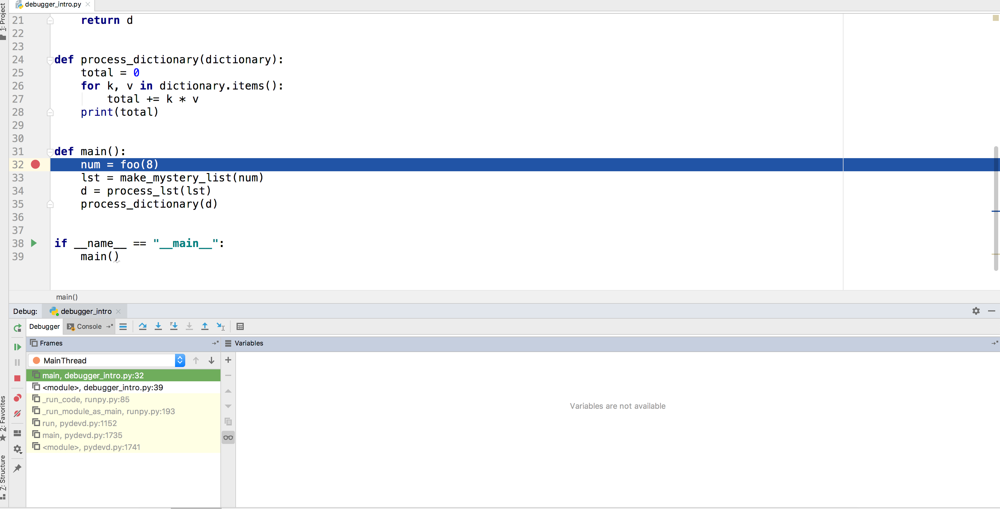

Back to CS 106A Homepage
Written by Nick Parlante, Brahm Capoor and Jason Lin
May 28th, 2019
In this problem, we'll go over how tools like list comprehensions,
lambdas and builtin functions like sorted,
sum max and min can be used to
solve hard problems in satisfyingly few lines of code.
Suppose we have some list of tuples representing statistics for how frequently a website is visited by particular browsers, as follows:
stats = [('foo.com', 'firefox', 23), ('bar.com', 'chrome', 47),
('foo.com', 'chrome', 3), ('bar.com', 'firefox', 16)]
In addition, note that the builtin sum function takes a
list of numbers and returns the sum of those numbers, as follows:
>>> sum([1, 2, 3])
6
Armed with this list, sum, and your knowledge of list
comprehensions, find one-line expressions for each of these values:
foo.com. For example, if applied to the list above,
your expression should evaluate to [23, 3].
foo.com. For
example, if applied to the list above, your expression should
evaluate to 26.
firefox. For example, if applied to the list above,
your expression shoudl evaluate to 39.
Given a list of numbers lst, write one-line list
comprehensions to do the following:
lst and 10. Recall that the
abs function returns the absolute value of a number.
lst that are between 10 and 15 inclusive, and 10.
Recall that the abs function returns the absolute value
of a number.
Now, suppose we have a list of pairs such as this one:
pairs = [('zzz', 3), ('bbb', 10), ('ccc', 4), ('aaa', 6)]
Write one-line list comprehensions to do the following:
pairs.
pairs, so long as the tuple's first element does not
begin with a 'c'.
pairs, except that the first character of each of these
elements is made uppercase. You can assume that each such element in
the tuples has at least one character.
In class this week, we explored the use of Jupyter notebooks as a means of more interactively engaging with the code we write by embedding it in a narrative that also includes textual commentary, images and graphs. In this problem, we'll be employing those same tools to aid us in solving a very real problem.
To get started, make sure you have the Jupyter notebook package
installed, which allows you to open and run Jupyter notebooks on your
own computer as well as matplotlib, which allows you to
quickly and easily draw graphs. If you haven't done this already, open
your Terminal application (called 'Terminal' on a Mac and 'Command
Prompt' or 'PowerShell' on Windows) and run the following command:
$ python3 -m pip install jupyter matplotlib
If you have a Windows computer, substitute python for
python3.
Next, go ahead and download and unzip the section starter code herefrom the online version of this handout. There are two files in this starter code:
heart_rates.ipynb: The Jupyter notebook you'll be doing
all your work on.
jumbled_heart_rates.csv: The dataset you'll be
analyzing.
Now, you'll need to open this folder in your terminal. On a Mac, type
cd into your terminal and (without pressing enter), drag
the folder from Finder into the terminal window (you should see the
full folder path show up) and then press enter. On a PC, open the
directory containing the folder, right-click the folder and click
'Open Command Window here'.
You should now have a terminal window that is open in the
Section8 folder. Now, type
jupyter notebook and press enter. This command should
open up your web browser to the Jupyter Notebook explorer. Open
heart_rates.ipynb to start the project!
As you made your way through the assignments this quarter, you likely encountered bugs that required you to inspect the state of your program to assess exactly what was going wrong. Perhaps you strategically printed the values of variables at key points in the program's execution, or perhaps you traced through them by hand, or perhaps you just randomly perturbed parts of your code until it worked (as a teaching staff, we can't endorse that last strategy, but we've all been there).
It's important to have a deep understanding of how to debug your
programs by yourself, but it turns out that PyCharm comes with a
feature called the debugger, which allows you to specify points
at which you'd like to pause their program's execution and poke around
to see the values of the variables. In this problem, we'll be
exploring how to use the debugger. Begin by downloading the PyCharm
project here
from the online version of this handout, importing it into PyCharm and opening
debugger_intro.py.
This program is a nonsensical one designed entirely to allow us to explore the debugger, so begin by running the program as per normal to see what it does (it should print a number). Following that, verify to yourself that -- at a high level -- you understand what each of the functions does.
Now, we're going to set a breakpoint on a line in our code,
which indicates to PyCharm that when we run our program, we would like
to pause the program before that line executes, and see what
our variables look like at that point. To set a breakpoint, click on
the editor's gutter, directly to the right of the line number, and
note that a red dot shows up in that position. Set a breakpoint on
line 32, which calls the foo function:
Now, click the bug button next to the run button in the top right corner to start the debugger:
After a brief pause, you should see line 32 highlighted, since the program is paused there, and the debug pane appear in the bottom of your PyCharm window:

The first portion of interest in this debuging pane is the
Stack Trace, which shows all the functions that are currently
running. Notice the top of this trace says main, since
that is the function that most recently begun execution. That said,
the key portion of this pane is the variables subpane, which displays
the values of the program's variables. Right now, since we've paused
our program before line 32 executes, no variables have been created
and so the pane doesn't show us anything. In order to step our program
forward, we turn our attention to the toolbar of buttons at the top of
the debug pane:
Far and away the most common buttons you'll be using are the leftmost
two, which are called the Step Over and
Step Into buttons, respectively. The Step Over button
executes the current line of code in its entirety and moves on to the
next one. If the current line of code contains a call to another
function, the Step Into button jumps into the first function to
be called on that line and pauses before it begins to execute. Click
the Step Into button to step into the
foo function.
Notice that the Stack Trace has updated to show that
foo has been begun (and main hasn't yet
ended), and that the variables pane has been updated to show the
current value of foo's n parameter, which in
this case is equal to 8, since we passed that value in when calling
foo. Verify to yourself that this output makes sense, and
then move the program forward a few lines by clicking the
Step Over button a few times, noting that the program cycles
through the for loop, and that entries for
i and total are created and updated in the
variables pane. As an added bonus, PyCharm displays the values for
variables on the line at which they are declared.
Keep moving forward in the program (the Step Over button will
automatically jump out of functions when they return) until you get to
line 33, at which point you should step into the
make_mystery_list function. At this point, keep stepping
forward, but pay particular attention to the value of lst
in the variables pane. Notice that its members list gets updated as
the function progresses:
As you keep stepping through the program, you'll notice the same is true for dictionaries:
Now that you have some familiarity with the debugger, open up
broken_program.py, a simple program aimed at
demonstrating the differences between how integers and lists are
passed as parameters. Trace through the program, and then run it,
verifiying that it behaves as you expect it to. Now, armed with the
debugger, step through the program, making sure that the values of the
variables are what you expect them to be at key points in the program.